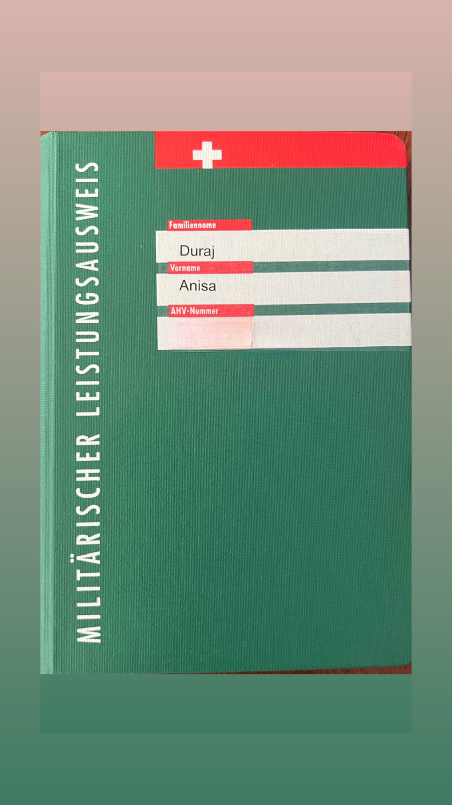

Wettkampf Analyse
Case Study: Performance-Auswertung eines offiziellen Turniers
Performance Übersicht
🎯 Trefferquote
87 % Durchschnitt
🏆 Wettkampfplatzierung
Top 10 im Teilnehmerfeld
⚡ Konstanz
Sehr stabile erste Serien
🧠 Mental
Verbesserungspotenzial im Finale
Leistungsentwicklung
Projektübersicht
Ziel dieses Projekts war die vollständige Analyse eines offiziellen Wettkampfs im Sportschießen. Dabei wurden technische, mentale und taktische Faktoren ausgewertet, um Verbesserungspotenziale für zukünftige Wettkämpfe zu identifizieren.

Analyse
Beobachtungen
- Sehr präziser Start in den Wettkampf
- Konstante Schussbilder über mehrere Serien
- Leichte Konzentrationsverluste im Finale
- Stressbedingte Abweichungen unter Zeitdruck
Interpretation
Die technische Ausführung blieb über den Großteil des Wettkampfs konstant. Unter erhöhter mentaler Belastung nahm jedoch die Feinmotorik leicht ab, was sich unmittelbar auf die Präzision auswirkte.
Optimierungsstrategie
🏋️ Drucktraining
Simulation realistischer Wettkampfsituationen.
🧘 Atemtechnik
Verbesserung der Schussroutine durch kontrollierte Atmung.
🎯 Technik
Optimierung von Haltung, Abzug und Zielaufnahme.
🧠 Mentaltraining
Steigerung der Konzentration unter Belastung.
Ergebnis
Durch die Analyse konnten mehrere konkrete Verbesserungsmaßnahmen identifiziert werden. Besonders die mentale Vorbereitung und die Standardisierung der Schussroutine bieten großes Potenzial für zukünftige Leistungssteigerungen.
Fazit
Die Wettkampf Analyse zeigt, dass bereits kleine Optimierungen in Technik und Konzentration zu einer deutlich stabileren Gesamtleistung führen können. Sie bildet die Grundlage für den weiteren Trainingsplan und die Vorbereitung auf kommende Wettbewerbe.
← Zurück zu den Projekten